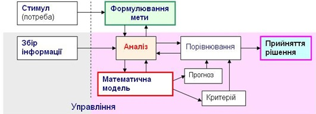

У процесі вивчення системного аналізу важливо передусім проаналізувати причини і фактори, що зумовили можливість його становлення й розвитку як універсальної наукової методології, зрозуміти роль і місце системного аналізу в сучасних галузях наукових знань, у різних сферах практичної діяльності, а також виявити міру його впливу на розвиток суспільства. Необхідність такого підходу обумовлена видатними досягненнями ХХ століття, зокрема освоєнням космосу; розробкою й масовим впровадженням обчислювальної техніки, інформаційних технологій і світової мережі Інтернет; швидким розвитком і широким застосуванням авіації; дослідженням ядерних процесів, освоєнням і розвитком атомної енергетики. Стрімкий розвиток наукомістких технологій і технічного оснащення в різних галузях виробництва й обслуговування, включаючи медицину, фармакологію, генну інженерію, низка інших найбільших досягнень науково-технічного прогресу увійшли в історію цивілізації як результат погодженої взаємодії науки, освіти і промисловості. В усі ці досягнення зробили свій вагомий внесок різні науки, які охоплюють багато галузей знань і різні історичні періоди. Це були науки, що зародилися у Стародавньому світі, і науки, формування яких почалося лише у ХХ столітті. До останніх поряд з іншими новітніми напрямами, такими як кібернетика. — це природоохоронна, науково-дослідна та культурно-освітня установа, що є штучно створеним об'єктом природно-заповідного фонду загальнодержавного значення. специализированных областей знаний и всю систему организаций и государственных учреждений, которые используют летательные аппараты тяжелее воздуха, а также — обладают аэродромами, специалистами и соответствующими средствами обеспечения полётов.

1. Системний аналіз організації (на прикладі Національного авіаційного університету).
Системний підхід – це принцип дослідження, при якому розглядається система в цілому, а
не її окремі підсистеми. Його завданням є оптимізація діяльності системи в цілому, а
також поліпшення ефективності окремих підсистем, що входять до неї.
2.Систематизує подібність окремих законів за допомогою
знаходження подібних структур у системах (ізоморфізм) незалежно від того, до яких
дисциплін і спеціальних наук відносяться ці закони.
3. Сприяє єдності науки, будучи “сполучною основою для систематики знань”. Загальну теорію
систем можна розглядати як “систему систем», що вказує на розбіжність і на подібність
між різними дисциплінами. Як приклад, за систему ми розглянемо державний навчальний
заклад – Національний авіаційний університет.
4. Проведення науково-дослідних робіт;